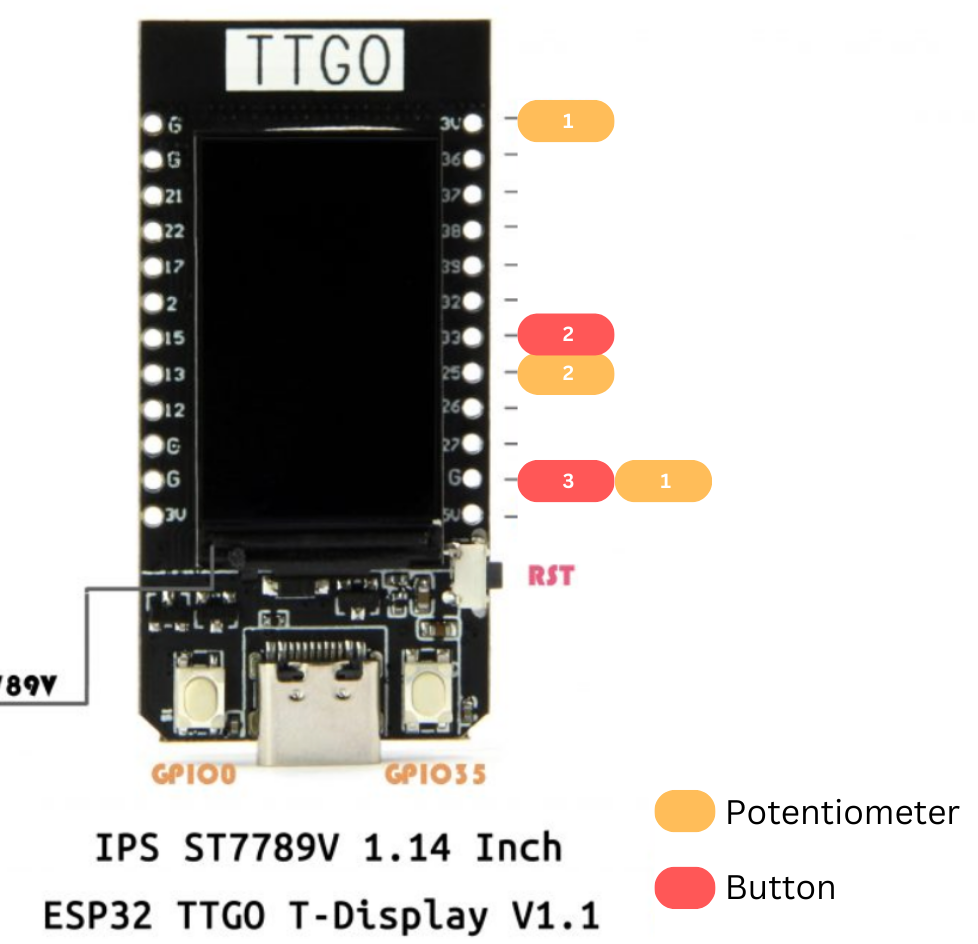
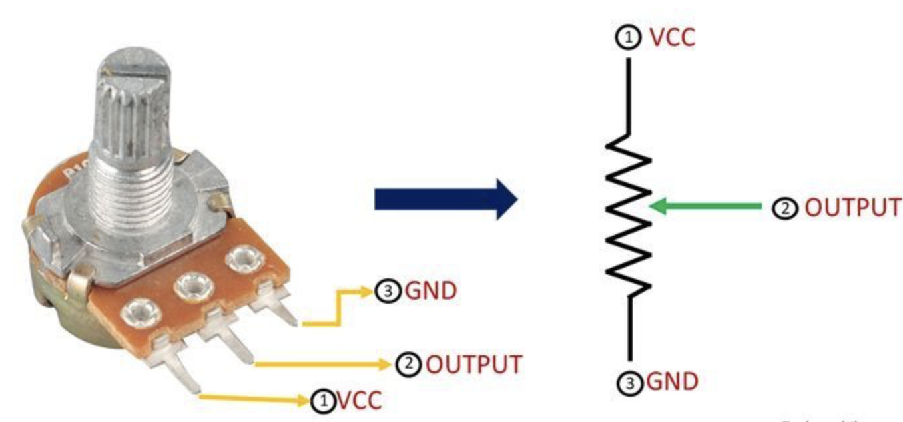
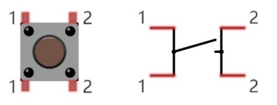

The game above is a fishing game called "Pescalo".
You play by using a potentiometer and a button: twisting the potentiometer knob shortens and elongates the fishing line, while pressing the button "hooks" a fish. To earn points, you must hook a fish and reel it back to the horizon line (think of catching a fish and reeling it back up and out of the water). Different colores fish are worth a different amount of points :
You play by using a potentiometer and a button: twisting the potentiometer knob shortens and elongates the fishing line, while pressing the button "hooks" a fish. To earn points, you must hook a fish and reel it back to the horizon line (think of catching a fish and reeling it back up and out of the water). Different colores fish are worth a different amount of points :
- Grey Fish = 1 point
- Yellow Fish = 2 points
- Green Fish = 3 points
The Components and Setup
The following items were used to create the piece:
- ESP32 with TTGO T-display
- USB wire
- Breadboard
- Single pole Single throw (SPST) Button
- Potentiometer
- Cardboard
- Tape and hot glue
- Computer


To begin this project, we first have to set up our potentiometer and button by wiring them into the breadboard with our esp32, as shown above.
The button and potentiometer components were soldered (above right) to wires before being plugged into the final piece.
Below is a diagram of how each component is wired to the esp32 (this is not a formal diagram, just a visualization to get a clearer idea of how things are wired). Also refer to the pinout diagrams of each component on the side.
Below is a diagram of how each component is wired to the esp32 (this is not a formal diagram, just a visualization to get a clearer idea of how things are wired). Also refer to the pinout diagrams of each component on the side.



Once those components were wired correctly, I wrote up some code on the Arduino IDE to capture the values of each component in real time and relay them on the serial monitor.
This code was then flashed onto the esp32 using a USB cable. The arduino code can be found
here.
Here is an early bare bone prototype of the game with no fancy graphics. It is a little blurry, but you can see the main mechanisms: when my fishing line touches
the fish (the blue boxes) without pressing the button, nothing happens. However, when I do press the button and I am in range, I hook the fish and pull it back up
to get points. In this prototype version you also had to press the button at the top to reel the fish in, but I got rid of this mechanic.


Lastly, I made my own enclosure using cardboard and hot glue. Once the base of the box was made, I cut out holes for the button and potentiometer on the lid, and a USB hole on the side.
I hot glued and taped the components into their holes and thread the USB cable through the hole. This left me with a controller I could use to comfortabley play the game!

The Code
Now, time for the fun part! To be able to create a game out of these values, I wrote up a Python script using PyGame which you can find
here.
Though I have very thoroughly commented the code, I will go over the most important snippets.
# Define serial port and baud rate (BAUD RATE must match the arduino code rate)
SERIAL_PORT = '/dev/tty.usbserial-56230321211' # Arduino serial port
BAUD_RATE = 115200
# Initialize serial connection
ser = serial.Serial(SERIAL_PORT, BAUD_RATE)
...
# GAME LOOP !
running = True
while running:
...
# read serial input from button and potentiometer and parse variables
serial_input = ser.readline().decode().strip()
values = serial_input.split(",")
potVal = int(values[0].strip())
buttonVal = int(values[1].strip())
In the first lines, we initialize a connection to the serial port where all the data is being relayed by the esp32.
Later, for every iteration of our game loop we read in the serial input, and parse it. Since my Arduino code prints
"potentiometer value, button value", the parsing is simple.
# check if the fishing line is touching a fish
def check_hooked_fish():
global hooked_fish
for fish in fish_list:
#check if button is pressed, and the fishing line is within paramters of the fish
if (buttonVal == 0 and
fishing_line_x >= fish['x'] and fishing_line_x <= fish['x'] + fish_size and
fishing_line_y >= fish['y'] and fishing_line_y <= fish['y'] + fish_size):
hooked_fish = fish
#stop the fish from moving and set its y coordinate to be glued to the fihsing line
hooked_fish['speed'] = 0
hooked_fish['x'] = fishing_line_x - 25
hooked_fish['y'] = fishing_line_y
break
elif buttonVal == 0 and hooked_fish:
#if button is clicked again, let go of fish
hooked_fish['speed'] = random.choice(fish_speeds)
hooked_fish = None
The check_hooked_fish() function is the game's 'collision detection'. For every fish present on the screen, we check if the button is pressed and if
the fishing line is within parameters of a fish. If it is, the fish is now the hooked fish (this is used later in reel_in_fish()
to check if a fish was properly reeled in and if points will be awarded). However, if the button is pressed but the fish is already hooked,
you let go of the fish and it swims away!
elif game_state == FISHING_SCREEN:
...
# Calculate fishing line_y position :
# fishing_line_y = find what percentage the potentiometer is at, and then multiply that by the playable screen (blue ocean block)
fishing_line_x = SCREEN_WIDTH // 6
fishing_line_y = SCREEN_HEIGHT - (SCREEN_HEIGHT - HORIZON_Y) * potVal// 4095
pygame.draw.line(screen, BLACK, (fishing_line_x, HORIZON_Y), (fishing_line_x, fishing_line_y), 2)
# check if fish is "hooked"/ stuck to fishing line
check_hooked_fish()
# check if fish @ horizon line (to count point)
reel_in_fish()
While the fishing game is ongoing, every iteration of the game loop draws the fishing line on the ocean (the blue square on the screen, whose height
is SCREEN_HEIGHT - HORIZON_Y). This is the core game mechanic, but how can we translate potentiometer values to the game?
The potentiometer values range from 0 to 4095, so we can demonstrate this as a percentage: potentiometer value//4095. Now, we can draw the length of
the fishing line as being the length of the (potentiometer percentage) * the height of the ocean (the blue square).
Now that we've drawn the fishing line and given it x, y coordinates, we can check if the fish are hooked and reeled up. In other words, we're visualizing the potentiometer value (some value out of 4095) ad representing a percentage on the screen. For example: if the potentiometer value is 2,475 (equivalent to turning the potentiometer half way, or 50%), then the fishing line will be half way down the ocean block.
Now that we've drawn the fishing line and given it x, y coordinates, we can check if the fish are hooked and reeled up. In other words, we're visualizing the potentiometer value (some value out of 4095) ad representing a percentage on the screen. For example: if the potentiometer value is 2,475 (equivalent to turning the potentiometer half way, or 50%), then the fishing line will be half way down the ocean block.
The Artistic Concept
When I heard I'd be working with a button and a potentiometer, I instantly thought of making a game. While finding a use for the button was pretty intuitive,
I had to be creative about how I would use a potentiometer. I began thinking: what game can I make where something can be controlled by turning a knob?
I thought about doing something with sound or music to become louder and quieter, or maybe something getting longer and shorter ...
With that last thought, a memory came to mind: I remembered spending my summers as a kid coming to my mother's office, sitting at her spare computer with my
brother playing Club Penguin. In particular, we were big fans of the "Ice Fishing" game where you pretended to be a penguin fishing through an ice hole, lengthening
and shortening your fishing line to catch fish.
Inspired by this, I decided to make a fishing game where your potentiometer would control the fishing line and your button would hook fish. Following the childhood theme
of my Module 1 project, I decided to create a game reminiscent of my childhood. While the general idea came from Club Penguin, the sound comes from a Super Mario underwater
level, and the visuals are inspired by Terraria, Nintendo DS games, and other pixel-art based games I used to watch my brother play for hours. I also went back a little further
and dipped into inspiration from Arcade games.
Since the great majority of my childhood happened in Spanish, it only felt appropriate to name the game in spanish: Pescalo. It's a verb that means "fish it!": pretty self explanatory!
Thanks for reading!
Since the great majority of my childhood happened in Spanish, it only felt appropriate to name the game in spanish: Pescalo. It's a verb that means "fish it!": pretty self explanatory!
Thanks for reading!